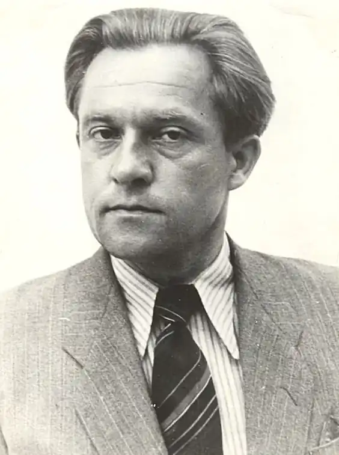
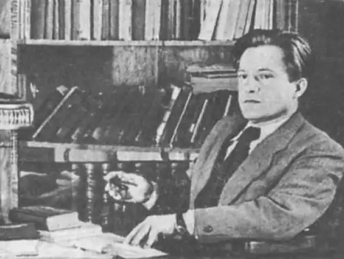

Ярослав Галан народився 27 липня 1902 року в селі Динів (тепер Підкарпатського воєводства Польщі) у греко-католицькій родині поштового службовця. У родині панували москвофільські настрої. Його батько з хлібом-сіллю зустрічав 1915 року у Львові російські війська та російську владу.
Під час відступу російських військ мати Ярослава Галана евакуювалася разом з дітьми: спершу до Львова, а згодом — до Ростова-на-Дону. Там він три роки навчався в російській гімназії, якраз у період Громадянської війни в Росії. У цей період ознайомився з агітацією Леніна, з творчістю низки російських письменників. Пізніше ті події, свідком яких він був, лягли в основу його оповідання "У дні незабутні". Після окупації Перемишля польськими військами (в ході польсько-української війни (1918—1919), Галани повернулися в Галичину.
1922 року закінчив Державну гімназію з українською мовою навчання в Перемишлі. Навчався у Віденському (1922—1926) та Краківському університетах (1926—1928). З 1924 — член Комуністичної партії Польщі. Викладав польську словесність в українській приватній гімназії в Луцьку. 1929 року позбавлений права на педагогічну роботу в межах тогочасної Польщі як член КПЗУ й активіст прокомуністичної організації лівих письменників "Горно" у Львові. 1930—1932 — співробітник львівських часописів "Вікна" (друкований орган "Горна") та "Нові шляхи". Також у цей період, разом з польською антиукраїнською письменницею Вандою Василевською, працював у польському часописі "Dziennik popularny".У 1932—1939 роках жив із випадкових заробітків. 1932 року до УСРР на навчання виїхала дружина письменника — Ганна Галан (Геник). 1937 її, студентку Харківського медичного інституту, за типовим фальшивим звинуваченням арештували й невдовзі стратили. 1935 року Галану відмовлено в радянському громадянстві. Письменник брав активну участь у комуністичному підпіллі, у підготовці та проведенні совєтофільського Антифашистського конгресу діячів культури (Львів, 1936). Ярослав Галан за працею Перебував під наглядом української поліції Львова. Галана двічі заарештовували за комуністичну пропаганду — 1936, 1937. Після анексії західноукраїнських земель Радянскою імперією працював кореспондентом львівської обласної газети "Вільна Україна" (1939—1941), всеукраїнської газети "Радянська Україна" (1942—1948) та головного російськомовного часопису ЦК КП(б)У "Правда Украины". Під час Другої світової війни був коментатором на радіостанції імені Тараса Шевченка (Саратов, 1942), на радіостанції "Радянська Україна" (Москва, 1943) та на пересувній прифронтовій радіостанції "Дніпро" (1943). Разом з польською антиукраїнською письменницею Вандою Василевською працював у групі журналістів при ЦК КП(б)У у польському часописі Nowe Widnokregy (Куйбишев, 1942) та українському часописі Радянська Україна (1943). З листопада 1945 до квітня 1946 — спеціальний кореспондент газети "Радянська Україна" на Нюрнберзькому процесі. 1 липня 1949 року Пій XII своїм Декретом проти комунізму відлучив від Католицької церкви усіх комуністів світу. У відповідь на цей декрет Галан написав сатиричний памфлет "Плюю на Папу" (написаний улітку 1949 року й уперше опублікований у журналі "Перець" (1949, № 18) під заголовком "Я і папа" у скороченому вигляді). Убитий у робочому кабінеті. Смерть спричинили 11 ударів сокирою по голові, причому більшість з них була завдана вже після смерті. Оголошувалося, що приводом для вбивства стали антиклерикальні памфлети письменника. За офіційною радянською версією, вбивство вчинили два бойовики ОУН-УПА, один із яких, Михайло Стахур, був особисто знайомий із письменником. Микита Хрущов особисто інформував про смерть Я. Галана Йосипа Сталіна, причому для "колориту" сказав, що вбивці користувалися гуцульською сокирою-барткою. Убивство погіршило становище львівської інтелігенції та студентів і пришвидшило ліквідацію націоналістичного підпілля на Західній Україні, зокрема вбивство Романа Шухевича радянськими військами у березні 1950 року. Після смерті Галана заарештували десятки львівських студентів. Багато дослідників обставин загибелі Галана, зокрема заступник декана історичного факультету Львівського національного університету імені Івана Франка, кандидат історичних наук Роман Генега, стверджують, що переконливих доказів, які б свідчили про пряму причетність керівництва українського підпілля до вбивства публіциста, немає. Водночас деякі сучасні дослідники, зокрема докторантка Альбертського університету Юлія Кисла, не заперечуючи можливості вбивства Галана провокаторами радянських спецслужб, стверджують, що для радянського керівництва республіки, зокрема Микити Хрущова, це вбивство стало несподіванкою. На думку Юлії Кислої, загалом версія про вбивство Галана націоналістичним підпіллям виглядає більш правдоподібною, а більшість аргументів прихильників версії про вбивство радянськими спецслужбами є спекулятивними.